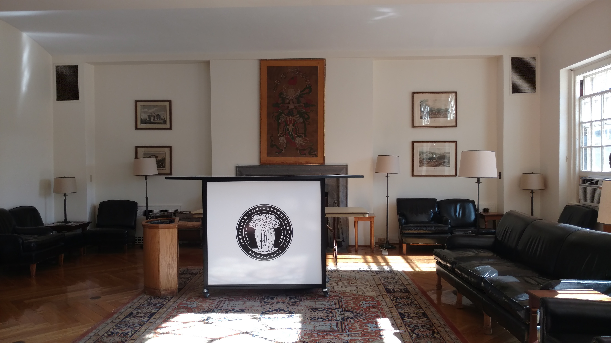
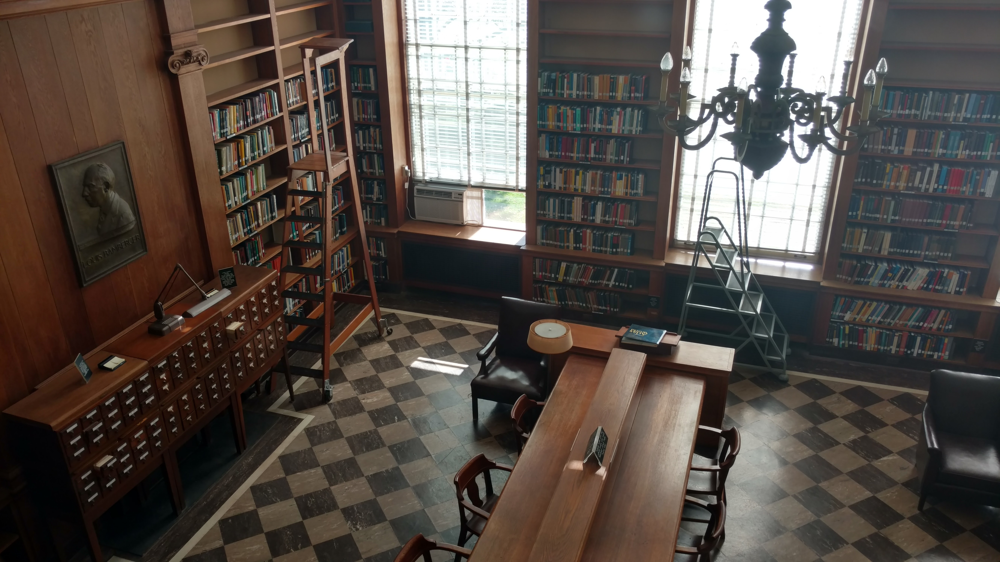
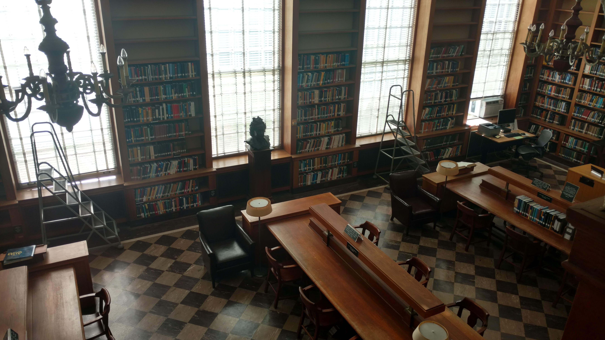
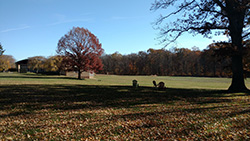
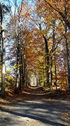

On that bright early morning, I set out to visit the Institute as part
of my weekend experience at HackPrinceton. It was also my first time at Princeton
and New Jersey all together, I didn't want to miss this opportunity.
On my way into the facility, I approached a well decorated lobby

that overlooked the lake and it's vast green field.
I explored the inside of the building further and stumbled upon the
private library. I was up on the second level and found that this was indeed a better angle for a photo,
this happens to be the right side

and this on the left.

The Institute felt incredibly serious even with hardly anyone around and with nothing going on.
Thankfully this facility is surrounded by a scenic landscape,

that I personally feel would help aid in deep contemplation and provide a nice breather from work .

After much strolling around, I decided to hop on to the next thing on my agenda.
I very much enjoyed myself and visiting the Insitute that day was a unique experience.
I do hope to attend their seminars one day.